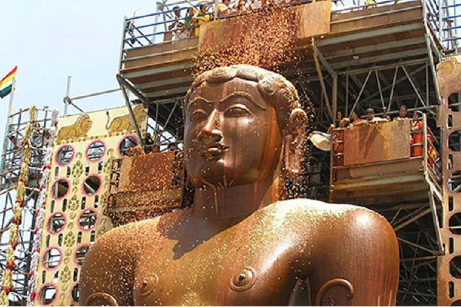
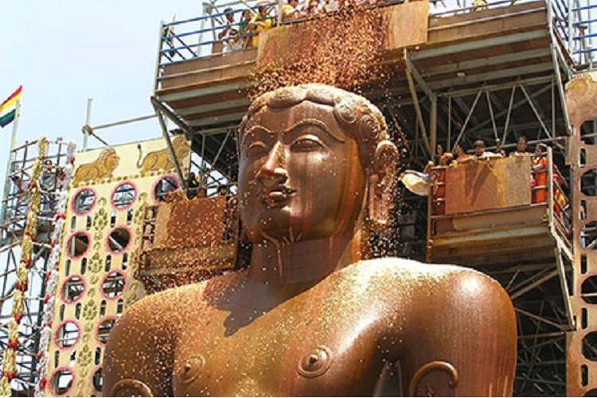

Golden triangle circuit covers attractions of India's three historical cities namely Delhi, Agra, and Jaipur. It has been named the golden triangle after realizing the locations of three cities that forms a triangle on the map of India. Golden triangle tour featuring some of India's most significant monuments such as Red Fort in Delhi, Amber Fort in Jaipur, and foremost the incredible. Kerala, a state situated on the tropical Malabar Coast of southwestern India, is one of the most popular tourist destinations in the country. Named as one of the ten paradises of the world by National Geographic Traveler,Kerala is famous especially for its ecotourism initiatives and beautiful backwaters.Its unique culture and traditions, coupled with its varied demography, have made Kerala one of the most popular tourist destinations in the world. Growing at a rate of 13.31%, the tourism industry is a major contributor to the state's economy.


Indian cuisine reflects an 8,000-year history of various groups and cultures interacting with the Indian subcontinent, leading to diversity of flavours and regional cuisines found in modern-day India. Later, trade with British and Portuguese influence added to the already diverse Indian cuisine. Indian cuisine consists of a variety of regional and traditional cuisines native to the Indian subcontinent. Given the diversity in soil, climate, culture, ethnic groups, and occupations, these cuisines vary substantially and use locally available spices, herbs, vegetables, and fruits. Indian food is also heavily influenced by religion, in particular Hinduism, cultural choices and traditions.Cuisine differs across India's diverse regions as a result of variation in local culture, geographical location,proximity to sea, desert, or mountains and economics. It also varies seasonally, depending on which fruits and vegetables are ripe.

India is a parliamentary secular democratic republic in which the President of India is the head of state and the Prime Minister of India is the head of government. It is based on the federal structure of government although the word is not used in the constitution itself. India follows the dual polity system, that is a double government (federal in nature) that consists of the central authority at the centre and states at the periphery.There is a provision for a bicameral legislature consisting of an upper house, the Rajya Sabha (Council of States), which represents the states of the Indian federation, and a lower house, the Lok Sabha (House of the People), which represents the people of India as a whole. The Indian constitution provides for an independent judiciary, which is headed by the Supreme Court. India has had a large number of political parties during its history under democratic governance. It has been estimated that over 200 parties were formed after India became independent in 1947.Every political party in India - whether a national or regional/state party - must have a symbol and must be registered with the Election Commission of India. Symbols are used in the Indian political system to identify political parties in part so that illiterate people can vote by recognizing the party symbols.

 

Indian-origin religions Hinduism, Jainism, Buddhism, and Sikhism,are all based on the concepts of dharma and karma. Ahimsa, the philosophy of nonviolence, is an important aspect of native Indian faiths whose most well known proponent was Mahatma Gandhi, who used civil disobedience to bring India together against the British Raj – this philosophy further inspired Martin Luther King Jr. during the American civil rights movement. Foreign-origin religion, including Abrahamic religions, such as Judaism, Christianity and Islam, are also present in India,as well as Zoroastrianism and Faith both escaping persecution by Islam have also found shelter in India over the centuries.